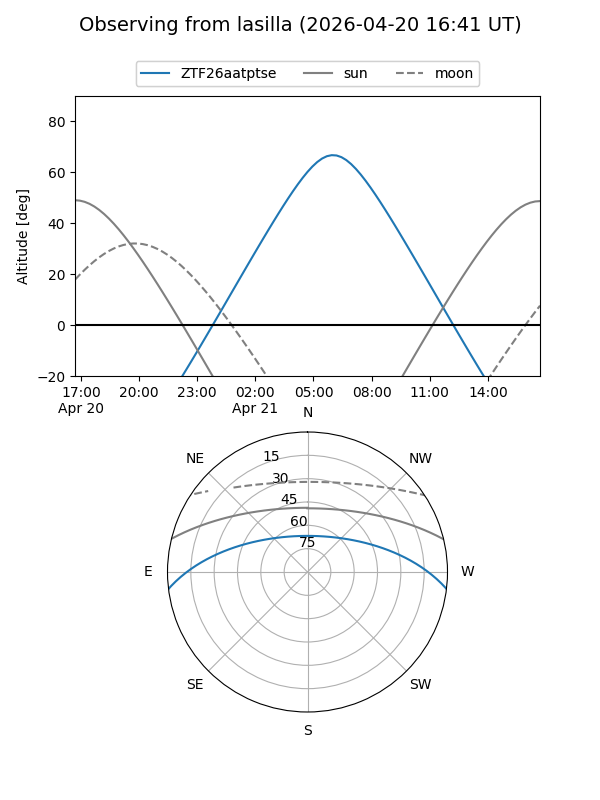
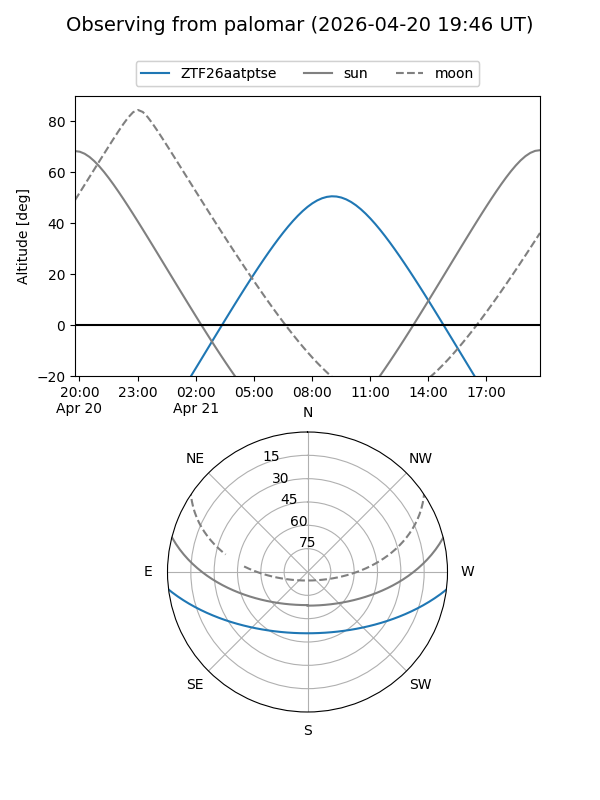

ZTF26aatptse
Target ZTF26aatptse at 2026-04-20 20:42
Aliases and brokers:
FINK: link
Lasair: link
ALeRCE: link
alt names
ZTF26aatptse (ztf,fink_ztf)
Coordinates:
equatorial (ra, dec) = 228.4046,-5.93560
equatorial (HMS+DMS) = 15:13:37.11,-05:56:08.16
galactic (l, b) = (354.3642,+42.30752)
Flags:
Photometry:
last ztfg=20.00
1 ztfg detections
Lightcurve
Visibility


Additional plots